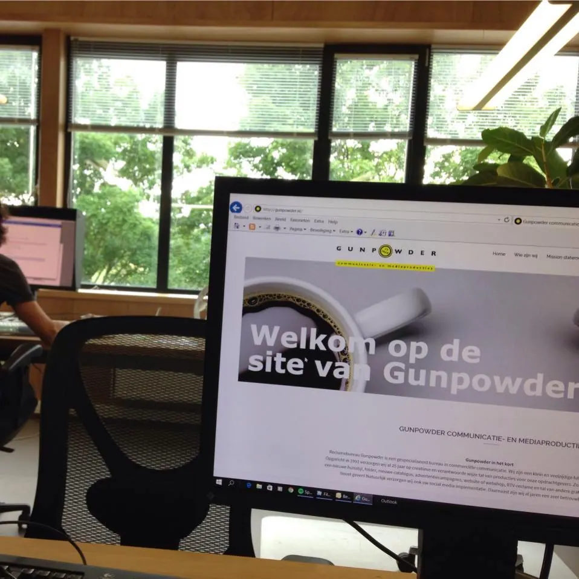

Bureau
Gunpowder communicatie- en mediastrategie

Gunpowder: Meesters in Communicatie- en Mediastrategie
De Expertise van Gunpowder in Marketing en Communicatie
Gunpowder, gevestigd in Nijmegen, is een toonaangevend bureau in communicatie- en mediastrategie, gespecialiseerd in het versterken van commerciële communicatie en marketing. Wij bieden een uitgebreid scala aan diensten om uw bedrijf op de kaart te zetten en uw marketing te versterken.
Volledige Marketingondersteuning
Ons dienstenpakket omvat de ontwikkeling van huisstijlen, het creëren van brochures en catalogi, het opzetten van effectieve publiciteitscampagnes, en het bouwen van dynamische websites en webshops. Daarnaast zijn wij experts in het maken van radio- en TV-reclames, zoekmachineoptimalisatie, en het produceren van bedrijfs- en productvideo's.
Uw Reclamebureau Voor Volledige Service
Als veelzijdig en full-service reclamebureau, opgericht in 1991, hebben we meer dan 27 jaar ervaring in het creatief en verantwoord vormgeven van talrijke producties voor onze klanten. Wij werken nauw met u samen om een nieuwe huisstijl, folder, catalogus, advertentiecampagne, website of webshop te ontwikkelen.
Social Media en Hosting Expertise van Gunpowder
Ze staan ook klaar voor de implementatie van uw social media strategie. Als betrouwbare hostingpartij bieden we al jaren flexibele en betrouwbare hostingoplossingen. Met ons al partner aan uw zijde bent u verzekerd van een innovatieve en effectieve benadering van uw marketing en communicatiebehoeften.
Contact en openingstijden
- AdresD.v. Poldersveldtweg 152, 6523 DD Nijmegen Kaart
- Openingstijden
maandag 09:00–17:00 dinsdag 09:00–17:00 woensdag 09:00–17:00 donderdag 09:00–17:00 vrijdag 09:00–17:00 zaterdag onbekend zondag onbekend - Goed om te wetenwebsiteswebshopsSEOsocial mediabranding en logovideodrukwerkzakelijke klantengratis kennismakingaan huis of op locatie
- Contactgunpowder.nl
0243237597
Info@gunpowder.nl
Facebook - ReviewsBekijk de reviews op Google Maps
Hier vind je Gunpowder communicatie- en mediastrategie
Kaart: © OpenStreetMap-bijdragers